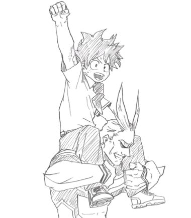

En un mundo de superpoderes, Izuku Midoriya nació sin ninguno. Sin embargo, su sueño de ser un héroe nunca se
apagó. Inspirado por All Might, el símbolo de la paz, Izuku emprende un camino lleno de retos para alcanzar su
meta.
A pesar de las burlas, la discriminación y el peligro, su espíritu inquebrantable y su corazón puro lo
convierten en un faro de esperanza para los marginados. Izuku demuestra que la grandeza no se define por dones
innatos, sino por la fuerza de voluntad, la compasión y la determinación.
Izuku Midoriya

Bakugo Katsuki
Toshinori Yagi
Main characters
Secondary characters